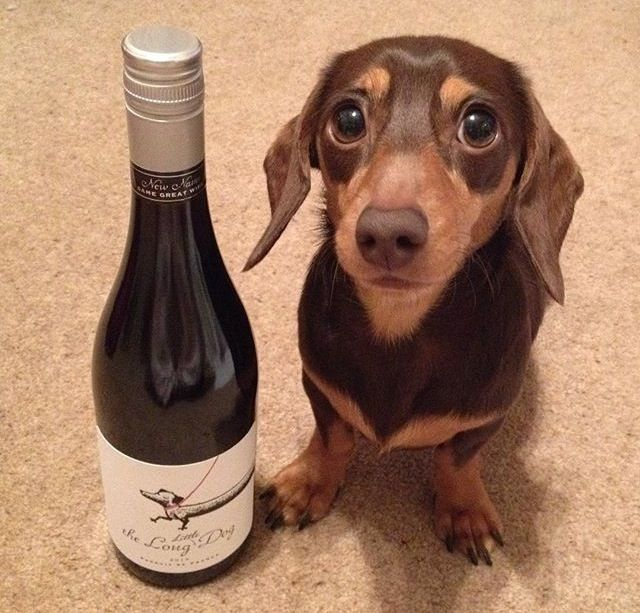

Моё любимое животное - такса. Это небольшая, очень милая и необычная собака. Мне нравятся её длинное тело, короткие лапы и выразительные глаза.
Таксы имеют длинное тело и короткие лапы. Их шерсть может быть короткой, длинной или жёсткой. Окрас бывает чёрным, коричневым, рыжим и других оттенков.
Несмотря на небольшой размер, таксы выглядят очень уверенно и гордо. Их внешность действительно особенная и запоминающаяся.

Таксы очень умные, любознательные и активные собаки. Они любят играть, гулять и проводить время со своими хозяевами.
Иногда они бывают упрямыми, но при этом очень преданными и ласковыми.
Я бы хотела себе такую собачку
Больше информации о таксах можно прочитать здесь:
Информация о породе таксаАвтор: Велиметова Ая